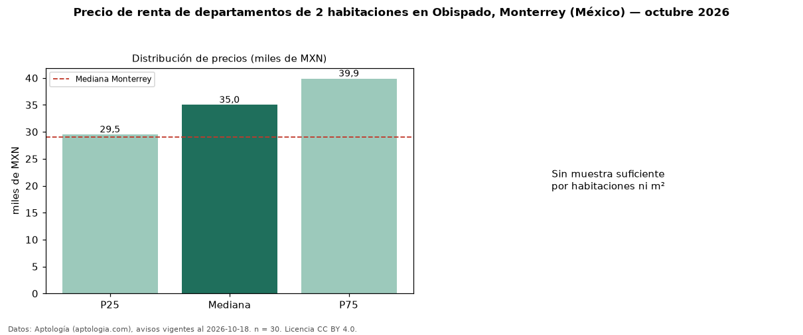

Precio de renta de departamentos de 2 habitaciones en Obispado, Monterrey (México) — octubre 2026
MXN 35.000 al mes es el canon mediano de departamentos de 2 habitaciones en renta en Obispado, Monterrey (México) (n = 30 avisos). Frente a la mediana de Monterrey para departamentos de 2 habitaciones (MXN 29.000), queda 21 % por encima. Son 64 % de los 47 avisos de departamentos en renta de la zona, cuya mediana general es MXN 31.000 (+13 %). La mitad central de los avisos va de MXN 29.500 a MXN 39.875 (razón 1,4), una dispersión baja. Datos: Aptología (aptologia.com), CC BY 4.0 — https://www.aptologia.com/. Archivos: PDF, CSV con las cifras y gráfica PNG.

| Avisos únicos | 30 |
|---|---|
| Percentil 25 | COP 29.500 |
| Mediana | COP 35.000 |
| Percentil 75 | COP 39.875 |
Fuente: avisos vigentes de portales inmobiliarios recopilados por Aptología, deduplicados (mínimo 30 avisos únicos por celda). Precios pedidos, no cerrados. Fecha: 2026-10-18.